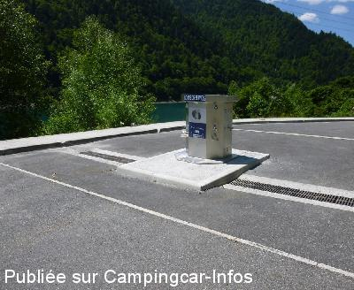
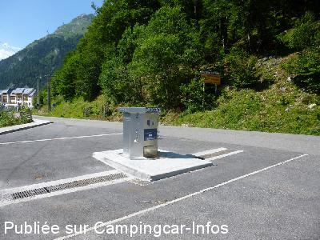

ASN = Aire de services avec stationnement nuit possible de :
LARUNS Artouste Fabrèges
(N° 492)
Accès/adresse :
Lac de Fabrèges, D431
Station d'Artouste
64400 LARUNS
Station d'Artouste
64400 LARUNS
Latitude : (Nord) 42.87772° Décimaux ou 42° 52′ 39′′
Longitude : (Ouest) -0.39502° Décimaux ou 0° 23′ 42′′
Tarif : 2015
Stationnement gratuit
100 L d'eau ou 1 h d'électricité : 5 €
Jetons à l'Office de Tourisme à Artouste/Fabrèges ou à Laruns.
Type de borne : AIRESERVICES
Services :


Tous commerces en saison.
Autres informations :
Ouvert toute l'année
Tél Office du Tourisme : +33(0)559 053 215

Le 29/06/2015 par Fanfan

Le 29/06/2015 par Fanfan
de
Jean Michel
le 24/09/2015 :
Arrivée le 13/09/2015 en milieu d'apres midi,nous avons pu stationner sur l'espace à coté du par-avalanche. bonne nuit au calme et le lendemain matin, nous avons pris les œufs et le " Petit Train d'Artouste " GENIAL PAYSAGES SOMPTUEUX. A faire si vous passez dans la région et prenez votre temps. Ce parking et sa station de services sont tres pratique, bravo et merci.
Arrivée le 13/09/2015 en milieu d'apres midi,nous avons pu stationner sur l'espace à coté du par-avalanche. bonne nuit au calme et le lendemain matin, nous avons pris les œufs et le " Petit Train d'Artouste " GENIAL PAYSAGES SOMPTUEUX. A faire si vous passez dans la région et prenez votre temps. Ce parking et sa station de services sont tres pratique, bravo et merci.
de
Alain lp
le 10/09/2015 :
Aire un peu désorganisée mais gratuite, le stationnement se fait sur le bord de la route ou sur les terrains en bout des pare avalanches au bord du lac.
Emplacement proche du départ de l'excursion du petit train d'Artouste qui vaut vraiment le détour.
Aire un peu désorganisée mais gratuite, le stationnement se fait sur le bord de la route ou sur les terrains en bout des pare avalanches au bord du lac.
Emplacement proche du départ de l'excursion du petit train d'Artouste qui vaut vraiment le détour.
de
Fanfan
le 29/06/2015 :
Bonjour, L'aire est située l'entrée du village d'Artouste Fabrèges ainsi que le parking réservé aux C-C.
L'accès du village n'est pas autorisé aux C-C.
Bonjour, L'aire est située l'entrée du village d'Artouste Fabrèges ainsi que le parking réservé aux C-C.
L'accès du village n'est pas autorisé aux C-C.
de
j-c
le 27/10/2014 :
De passage le 18 et 19 octobre l'aire a changé de place.Maintenant le stationnement se fait le long de la route sur des emplacements délimités juste avant l'accès à la station.(celle-ci étant maintenant interdite aux campings-cars) La borne de service se trouve à la suite du stationnement,elle peut accueillir simultanément deux campings-cars mais l'accès n'est pas des plus commodes ce qui est bien dommage pour une aire toute neuve.
De passage le 18 et 19 octobre l'aire a changé de place.Maintenant le stationnement se fait le long de la route sur des emplacements délimités juste avant l'accès à la station.(celle-ci étant maintenant interdite aux campings-cars) La borne de service se trouve à la suite du stationnement,elle peut accueillir simultanément deux campings-cars mais l'accès n'est pas des plus commodes ce qui est bien dommage pour une aire toute neuve.
de
maryline lucas
le 13/09/2014 :
Nous avons passé une nuit en juillet au bord de la route au niveau des pare-avalanches, sans aucun problème et pourtant la météo était favorable. Vue sur le lac, espace correcte entre les camping-cars (possibilité d'ouvrir le store sans aucun problème). En soirée il n'y aucun problème pour accéder à la borne si vous avez un jeton. stationnement gratuit.
Merci à la commune d'avoir fait des efforts pour les camping-caristes qui veulent monter au lac d'Artouste.
Nous avons passé une nuit en juillet au bord de la route au niveau des pare-avalanches, sans aucun problème et pourtant la météo était favorable. Vue sur le lac, espace correcte entre les camping-cars (possibilité d'ouvrir le store sans aucun problème). En soirée il n'y aucun problème pour accéder à la borne si vous avez un jeton. stationnement gratuit.
Merci à la commune d'avoir fait des efforts pour les camping-caristes qui veulent monter au lac d'Artouste.
de
Gaz47
le 27/09/2013 :
Le stationnement des CC est réglementé.
L'accés au village pour les CC est interdit y compris dans la journée.
Des places de parking de jour sont aménagés en amont du village le long du lac.
Le stationnement de nuit est possible avant le village derrière le pare avalanches.
Les emplacements ne sont pas délimités !!!
Prévoyez un ouvre boite pour sortir de votre CC.
1 m de chaque coté, il y en a qui aime !
Heureusement j'avais une solution de rechange afin de partir en randonnée.
Le stationnement des CC est réglementé.
L'accés au village pour les CC est interdit y compris dans la journée.
Des places de parking de jour sont aménagés en amont du village le long du lac.
Le stationnement de nuit est possible avant le village derrière le pare avalanches.
Les emplacements ne sont pas délimités !!!
Prévoyez un ouvre boite pour sortir de votre CC.
1 m de chaque coté, il y en a qui aime !
Heureusement j'avais une solution de rechange afin de partir en randonnée.
de
Deneir Antoon
le 26/09/2013 :
11/09/2013
Antoon & Bea
Jammer dat men het dorp niet meer mag binnenrijden met een Campingcar,er staan verschillende borden die de toegang ontzeggen.Dan maar geparkeerd en overnacht langs het meer op een braak liggend terein.Wij stonden er met 7 Campingcars. Iedeale plaats om met het treintje een prachtige reis van 50' te doen op een hoogte van 2.000m. werkelijk aan te bevelen; Een uitstekend restaurant gevonden juist boven het ticketbureau rechts.(naam vergeten)
11/09/2013
Antoon & Bea
Jammer dat men het dorp niet meer mag binnenrijden met een Campingcar,er staan verschillende borden die de toegang ontzeggen.Dan maar geparkeerd en overnacht langs het meer op een braak liggend terein.Wij stonden er met 7 Campingcars. Iedeale plaats om met het treintje een prachtige reis van 50' te doen op een hoogte van 2.000m. werkelijk aan te bevelen; Een uitstekend restaurant gevonden juist boven het ticketbureau rechts.(naam vergeten)
de
dejean
le 03/09/2012 :
Bonjour
Je suis passé courant Aout , dommage pour la tranquillité
des voitures dans tous les sens , stationnées sur les aires de vidange c.car
Seule solution de stationnement ce jour là , le bord de la route a coté des poubelles et d'un dépôt de chantier.
Nous avons passé notre chemin
Bonjour
Je suis passé courant Aout , dommage pour la tranquillité
des voitures dans tous les sens , stationnées sur les aires de vidange c.car
Seule solution de stationnement ce jour là , le bord de la route a coté des poubelles et d'un dépôt de chantier.
Nous avons passé notre chemin
de
pivoinerose
le 08/07/2012 :
Nous nous sommes arrêtés sur cette aire les 25 et 26 juin 2012.
Nous avons stationné à proximité du village en surplombant le lac (lac un peu à sec). Très calme. Les vaches, en liberté dans ces espaces, viennent vous rendre visite et vous servent de "réveil matin".
Nous avons emprunté le petit train d'Artouste.Circuit impressionnant d'une durée d'environ 50'. Puis une petite "grimpette" pour atteindre le lac d'Artouste, derrière le barrage.
Les marmottes dormaient, nous n'en avons vu qu'une.
Nous nous sommes arrêtés sur cette aire les 25 et 26 juin 2012.
Nous avons stationné à proximité du village en surplombant le lac (lac un peu à sec). Très calme. Les vaches, en liberté dans ces espaces, viennent vous rendre visite et vous servent de "réveil matin".
Nous avons emprunté le petit train d'Artouste.Circuit impressionnant d'une durée d'environ 50'. Puis une petite "grimpette" pour atteindre le lac d'Artouste, derrière le barrage.
Les marmottes dormaient, nous n'en avons vu qu'une.
de
ocral jack
le 16/08/2011 :
Si vous souhaitez passer la nuit sur la station il faut vous faut stationner près du pare-avalanches (parking sans lignes matérialisées au sol,chacun s'installe comme bon lui semble!!!)
Si vous ne pensez que rester la journée il est autoriser de stationner sur le grand parking au pied de la station (pas au bord du lac)
L'aire de services est une borne Euro relais prévue pour deux véhicules.
Le jeton est a retirer soit à l'office du tourisme(si ouvert)ou au magasin le Petit Lurien (épicerie/pain)
Jeton = 4 € = 100 L d'eau ou 1 heure d'électricité.
Bientôt il ne sera plus possible de stationner au parking au dessus de la station car il se construit un immeuble de 16 habitations....
Si vous souhaitez passer la nuit sur la station il faut vous faut stationner près du pare-avalanches (parking sans lignes matérialisées au sol,chacun s'installe comme bon lui semble!!!)
Si vous ne pensez que rester la journée il est autoriser de stationner sur le grand parking au pied de la station (pas au bord du lac)
L'aire de services est une borne Euro relais prévue pour deux véhicules.
Le jeton est a retirer soit à l'office du tourisme(si ouvert)ou au magasin le Petit Lurien (épicerie/pain)
Jeton = 4 € = 100 L d'eau ou 1 heure d'électricité.
Bientôt il ne sera plus possible de stationner au parking au dessus de la station car il se construit un immeuble de 16 habitations....
de
BobMarlow UK
le 21/08/2009 :
Stayed on aire 15/11/2008 very peacefull.Below freezing and had snowed but roads kept clear about 8 miles from Spain were the ski lift was working at the border with people on the French side taking of from the side of road.
Stayed on aire 15/11/2008 very peacefull.Below freezing and had snowed but roads kept clear about 8 miles from Spain were the ski lift was working at the border with people on the French side taking of from the side of road.
de
gros fabien
le 27/01/2008 :
Parking super très belle vue sur le lac. Depuis le petit train on peut voir des marmottes. Vue sur la montagne magnifique, promenade un peu longue mais quand on est arrivé au lac vue très belle.
Parking super très belle vue sur le lac. Depuis le petit train on peut voir des marmottes. Vue sur la montagne magnifique, promenade un peu longue mais quand on est arrivé au lac vue très belle.
de
jean luc marsac
le 24/02/2007 :
Endroit très agréable, avec plusieurs départs de randonnée et l'accès au petit train d'Artouste (à ne pas manquer). Aire très calme en plein mois d'août avec vue sur le lac de Fabrèges.
Endroit très agréable, avec plusieurs départs de randonnée et l'accès au petit train d'Artouste (à ne pas manquer). Aire très calme en plein mois d'août avec vue sur le lac de Fabrèges.